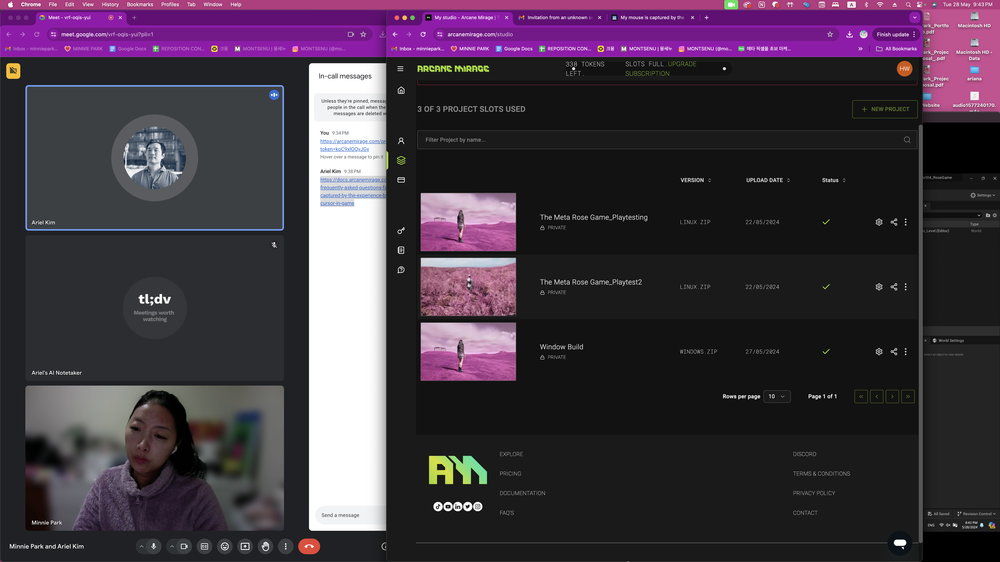
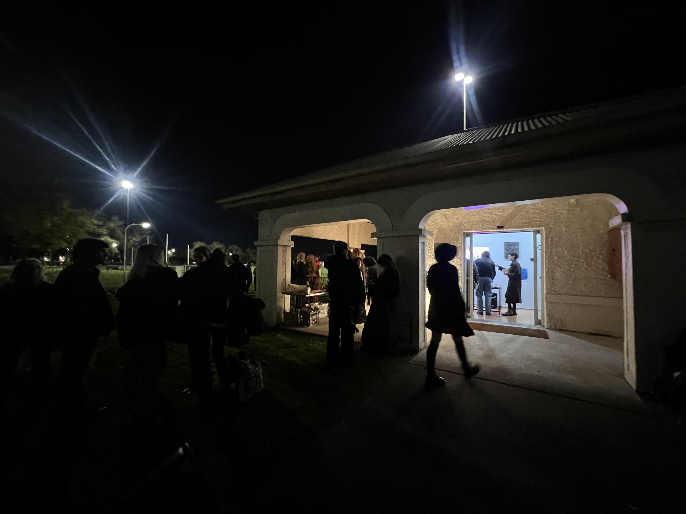
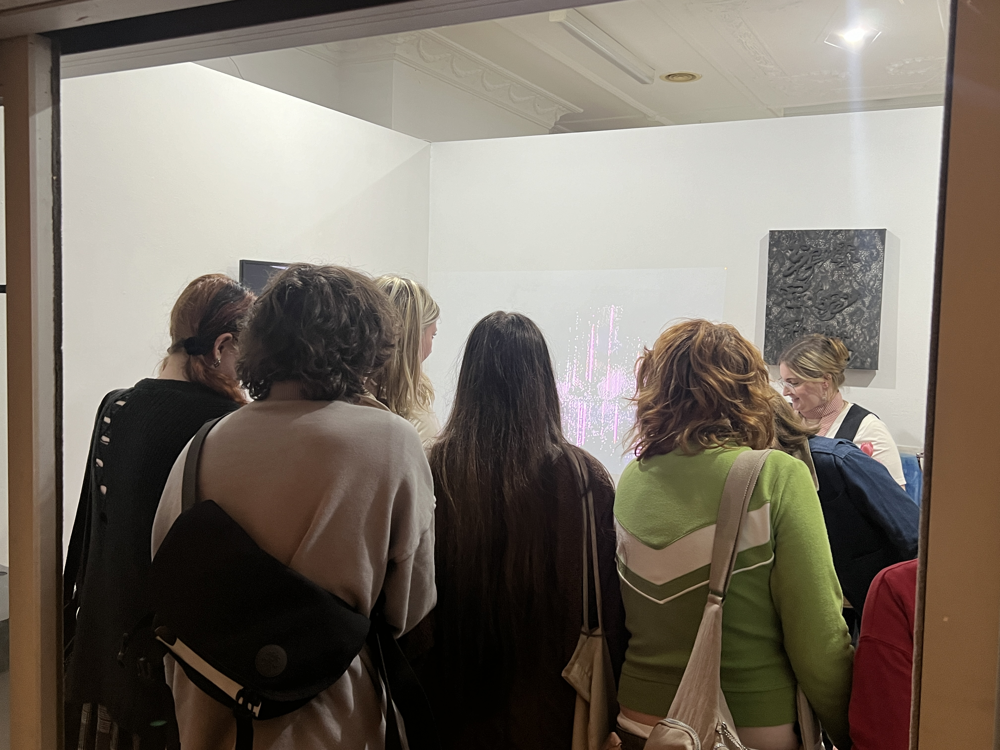
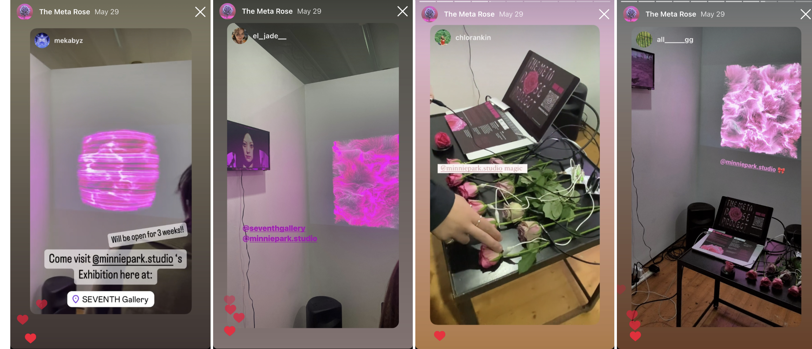

WEEK 12
2705 - 0206WORK PROGRESS
Artwork 4,5,6: Unreal Game + TouchDesigner + MV

Game Updates:
After encountering numerous issues on Arcane Mirage with pixel streaming, I had a Zoom meeting with the platform's developer. He went over the log file to identify why things weren't working properly. The conclusion was to try implementing another online subsystem, EOS (Epic Online Subsystem), rather than Unreal Engine’s default system which I had been using. So, I tried implementing EOS, which meant I had to re-program/script the session-making system and redesign the main menu following the EOS system. I spent a few days on these alterations.
However, the multiplayer was still not working in the browser, although it was functioning fine in the game viewport. It might be due to my improper implementation of the EOS system, but at this point, with the exhibition next week and other tasks to complete, I decided to proceed with Steam’s online subsystem. This will allow the multiplayer system to work when the game file is downloaded to the computer. If this approach works, then I know I can present the game with multiplayer functionality at the exhibition. If I happen to have some extra time, maybe I can revisit EOS and Arcane Mirage.
So, I changed the session system back to Steam’s system. Here's how it works: the project file will have Steam’s online system integrated into the build. When it's downloaded and Steam is logged in before executing the game file, the game will automatically connect to Steam’s online system to host, find, and join sessions.

After making the alteration, I conducted some testing with others, and it worked! I was so glad that it was finally working after all the alterations and troubleshooting!
During user testing, I received feedback and made some additions to the game. I added NPCs so players can talk to them and get some clues on the game.
These are the texts added to the NPCs, and they are randomly picked when players press 'C' after approaching them.
- "I found something when I was swimming earlier."
- "I heard that there is an Easter egg somewhere."
- "Pink giants heal!"
- "Aren’t roses beautiful?"
- "Who knows what’s in the upside down?"
- "Don’t get too close to the scary ones!"
- "Have you touched some pink grass yet?"
- "Have you been swimming yet?"
In addition, instead of saying “Collect 5 roses to open the portal,” when anyone collects 5 roses, the widget will appear and say, “Open the portal.”
In this way, the players just get the objective of collecting 5 roses when they begin playing, and then the next step is to find the portal once the message appears.
Another feedback was on the amount of damage and the healing with shooting roses. They thought the number was too small. The damage and the healing were 5 out of 100. Now it is changed to 25 and 30.
As the last update, the Easter egg was added to the map. It is placed inside the cliff. I was thinking of what to put as an Easter egg and placed a giant donut inside the cliff. This is the Easter egg that the NPC is mentioning. They are added with rotating movement, and when they are found, the players get 100 health. It made sense to have 100 health since it’s a giant donut!


Touchdesigner Updates:
With the TouchDesigner piece, I had the precious opportunity to showcase it to a live audience at Seventh Gallery on the opening night! Before the opening night, I did some testing with roses to ensure everything works, and I prepared printed instructions for the night as well. My work was placed at the entrance of the gallery, making it the first piece visitors saw when they stepped in. It was definitely a rewarding experience to see how the audience interacted with the piece.
There were a few comments that really stuck with me; one person mentioned they had never seen anything like it before and thought it was so creative that they believed it should be in the NGV. I felt truly grateful for the opportunity to showcase my work to the audience, and it was definitely motivating for me to continue creating. With the success of the opening night, I believe this interactive piece is definitely done and ready!


Music video Updates:
For the music video, I decided to proceed with all renderings without using any real footage. I attempted to incorporate footage from LA with pink walls, but it didn't blend well with the rest. Instead, I proceeded to animate Mintie using her facial rigging to make it appear as though she is singing in the video. I utilised LiveLink and footage of myself lip-syncing to the song. The song was about 3 minutes and a half long. After completing the process of implementing the animation to Mintie, I began rendering the scene. However, it is taking a lot of time, and it crashes during the render as well. As a result, I started editing the music video before the rendering finished.
INDUSTRY ENGAGEMENT
Seventh Gallery Exhibition Opening Night
6-8pm Wednesday 29th May
https://www.seventhgallery.org/content/exhibition---its-nothing-personal 
The opening night was a great success! It felt wonderful to see how the audience interacted with my artwork.
Many attendees shared the work via their stories, and I reposted them, creating a highlight dedicated to the TouchDesigner interactive piece.
I felt inspired and proud to showcase the work at Seventh Gallery!
Digital Art Fair Application
Due 31st May
https://www.digitalartfair.io/I followed up on the email I received from the digital art fair a while ago. I created a PDF file with the project description and included updated visuals of all the artworks in the project
SOCIAL MEDIA

Here are some of the screenshots from the stories shared by the audience, which I then reshared on my account.